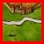
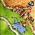

| Carcassonne | ||||||||||||||||||||||||||||||
The Game Carcassonne is a tile-laying game. The objective of the game is to build regions and to occupy regions. When a region is completed, the players with the most followers in the region receive an appropriate number of points. The game is over when there are no more tiles available. The player with the most points wins. Note: This version of Carcassonne is mostly simpler than the original but has been changed at a few points to drive home some points on the interaction among software components. You may want to consult the rules for the original game and even play it to get a feeling for the process but beware that the rules differ. The Tiles  The leftmost tile with the red boundary is the unique starter tile. At the northern end it depicts a fragment of a castle, the white line running from left to right is a road fragment. The center tile is an abbey. The rightmost tile depicts the fragment of a castle that borders the northern as well as the eastern side of the tile. Before you read on, take a look at the collection of all tiles. Turns, Part I Placing a tile may thus involve
Over the course of a game, this map of tiles evolves. The map is usually not densely connected, like the four examples might suggest. The ultimate shape depends on the strategy of the players and how they operate to build regions. Note: If it is impossible to add a tile to the map, the player may return the tile to the heap and pick up another tile. Regions
Turns, Part II When the placement of a tile completes a region, the follower(s) are immediately returned to their respective player. This implies that the player who just placed the tile may use a returned follower to end his turn. It is permissible to connect two distinct regions with followers, and this kind of move is indeed an important part of the game. Scoring Points correspond to the number of pieces in a region. Thus a completed abbey always yields nine (9) points. A completed road produces as many points as there are participating tiles, including the end pieces. Each castle tile accounts for two (2) points, unless it also contains a flag, in which case it accounts for four (4) points. The End At the end of the game, players receive additional points for followers that occupy abbeys. The score for an incomplete abbey region consists of one point for the abbey tile plus the number of tiles that touch the abbey, i.e., a player may obtain up to eight (8) points for an abbey at the end of the game. The followers on incomplete roads and incomplete castles are ignored. Bibliography | |||||||||||||||||||||||||||||||
| last updated on Tue Jun 9 22:03:19 EDT 2009 | generated with PLT Scheme |